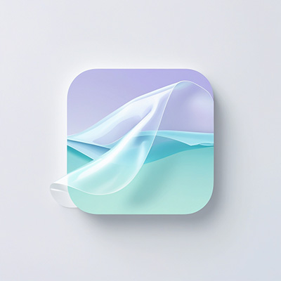
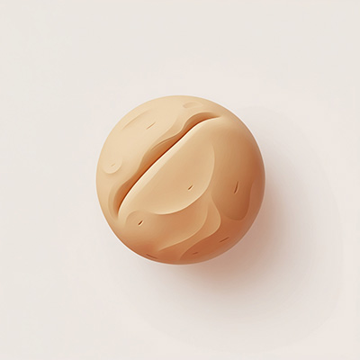
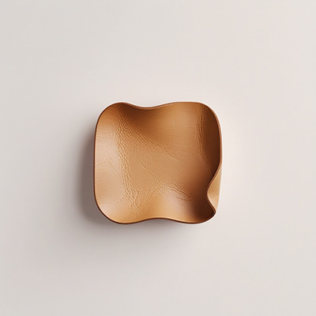
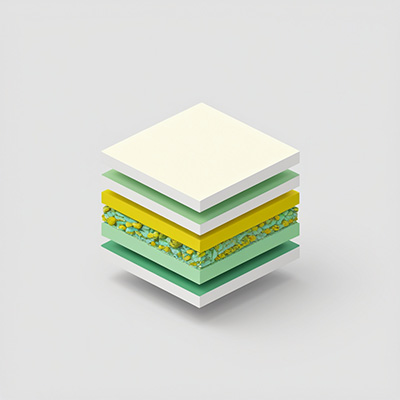
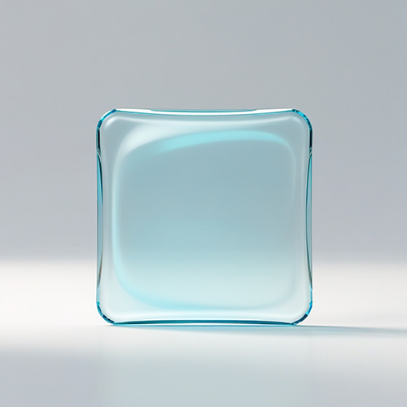
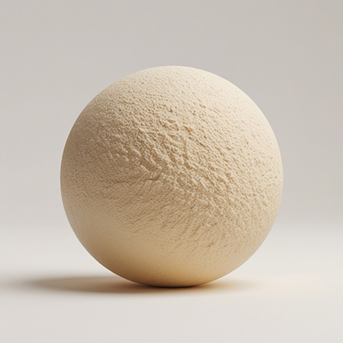
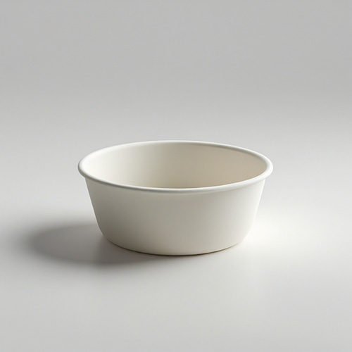
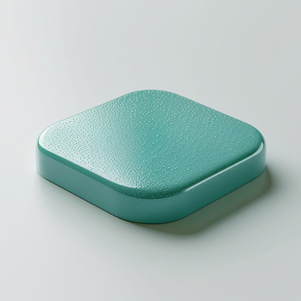

Progetto
Da esigenze a ingredienti
Catalogo
Materiali esistenti
Ingredienti
Database completo
Laboratorio
Test combinazioni
Problemi
Troubleshooting

Film
-+-

Gel
-+-

Massa
-+-
Coating
-+-

Schiuma
-+-

Pelle
-+-

Composito
-+-
Documentati
-
Caricamento...
In Progress (Lab Albertina)
-
Caricamento...
Validato
Funziona
Problemi
Replicabile
Industriale
Esigenze / Requisiti
da proprietà a ingredienti
Proprieta desiderate

✓
Trasparente
✓
Flessibile

✓
Rigido
✓
Resistenteall'acqua
 ✓
✓

✓
Food-safe

✓
Antibatterico
✓
Termostabile
Seleziona almeno una proprieta per vedere i suggerimenti
Tutti
Carrello
Proteine
Polisaccaridi
Policatione
Plastificanti
Lipidi
Sali
Cariche
Coloranti
Additivi
Colture
0 ingredienti
Seleziona un ingrediente
Tavolo di Lavoro
0
Clicca sugli ingredienti nel carrello per aggiungerli al tavolo
Verifica Compatibilita
Aggiungi almeno 2 ingredienti
Materiale Risultante Descrizione ↓
Tipo previsto
-
Aggiungi ingredienti al tavolo
Propriet stimate
Requisiti
Tecnica di lavorazione
Ipotesi di Formula
formulazioni variabili da verificare
formulazioni variabili da verificare
Usa le sul tavolo per selezionare
Annotazioni personali
Formule Salvate
0
Nessuna formula salvata
Descrizione Materiale Ipotizzato Formulazione ↑
Previsione basata sulle famiglie chimiche, non sulle interazioni specifiche tra ingredienti. Il risultato reale dipende da proporzioni, temperatura e tecnica.
Aggiungi ingredienti al tavolo per vedere una descrizione del possibile materiale